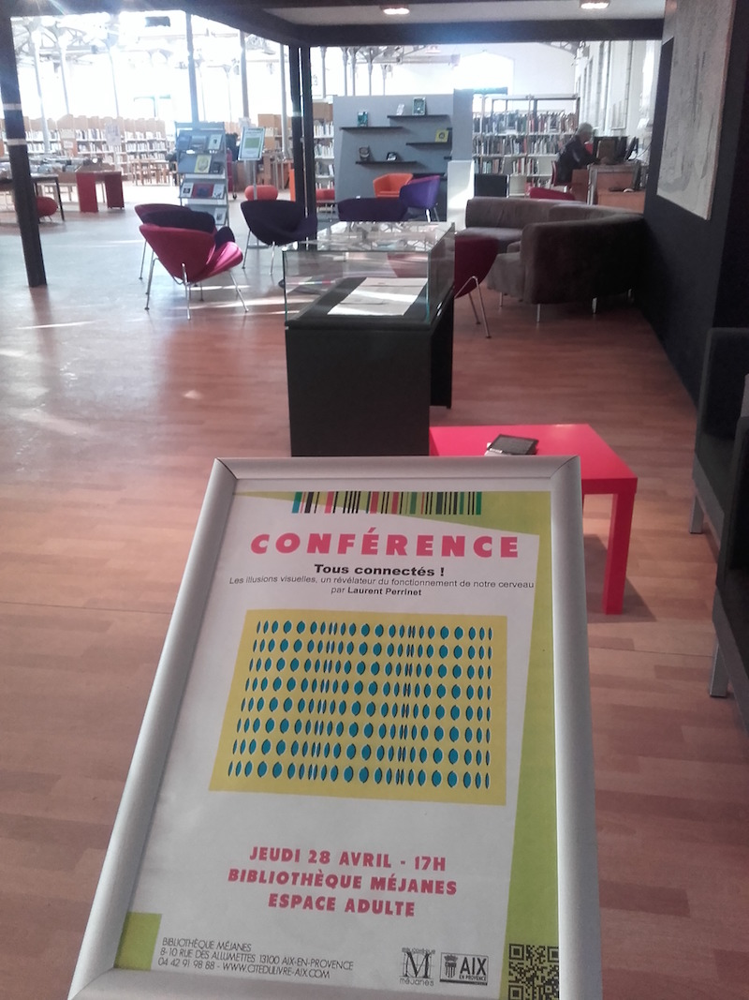

Les illusions visuelles, un révélateur du fonctionnement de notre cerveau
Cycle de conférences “Tous connectés”, Bibliothèque de Méjanes

- Date
28 Avril 2016 - Location
Bibliothèque de Méjanes - Visuels
HTML
Laurent U Perrinet
Researcher in Computational Neuroscience
My research interests include Machine Learning and computational neuroscience applied to Vision.